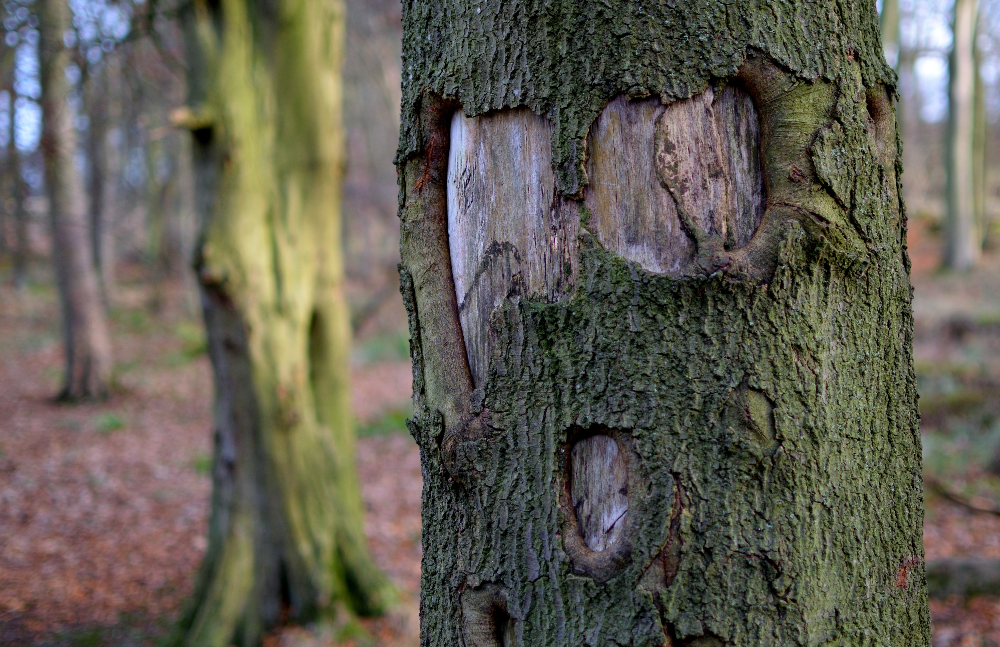
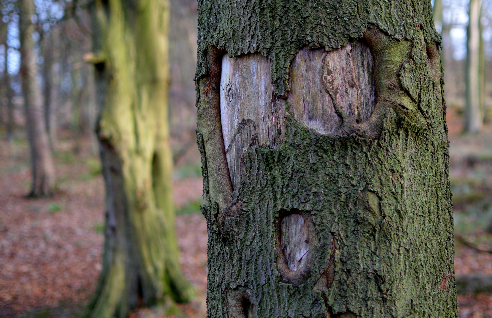

Ti è mai capitato di vedere forme, oggetti, volti tra le nuvole, dall’incrocio casuale di linee, su una macchia, su un tronco di un albero o tra la natura? Non sei pazz* !!! Questo fenomeno si chiama pareidolia ossia l’illusione di vedere oggetti, e sopratutto volti laddove ci sono forme caotiche. Creaos si pone come una raccolta di input creativi, fatti di linee confuse, macchie colorate, immagini di nuvole, rocce, alberi che chiunque può fruire per creare nuovi ed inediti contenuti liberando la propria mente, fantasia e creatività.. Utile per i blocchi creativi degli artisti, a chi necessita di un momento di libertà mentale nell’arco della giornata, a chi cerca nuovi spunti o come momento di svago tra più persone. La pareidolia è un fattore soggettivo, entra in gioco la creatività, la fantasia e l’esperienza. È chiaro che così facendo, una linea, una macchia uguale per tutti, sarà vista diversamente da soggetto a soggetto. A tal fine è utile il confronto, che genera uno scambio tra il pubblico stesso. E tu cosa ci vedi ?